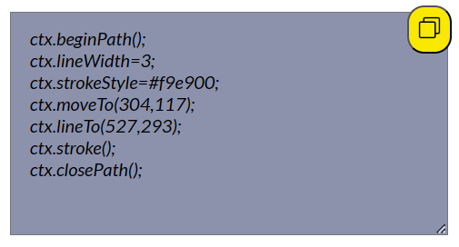

Canvas Point Generator is used to generate x and y coordinates for canvas HTML5 and also to generate related code.Here you can create any drawing by using the given canvas HTML5 methods and you can also copy the code and then paste it to your personal code.

In the generated code the ctx variable is the getContext object. So while writing your personal code make sure that you name the getContext obj as ctx orlese you will have to rewrite all of the ctx variable to the defined one.
Eg: const canvas = document.getElementById("canvas");
const ctx = canvas.getContext("2d");
The lineTo() method adds a line from the last point in the path to a new point.
To know more about lineTo() method, visit https://www.w3schools.com/tags/canvas_lineto.asp
The quadraticCurveTo() method adds a curve to the current path by using the control points that represent a quadratic Bézier curve.
To know more about quadraticCurveTo() method, visit https://www.w3schools.com/tags/canvas_quadraticcurveto.asp
The bezierCurveTo() method adds a curve to the path by using the control points that represent a cubic Bézier curve.
To know more about bezierCurveTo() method, visit https://www.w3schools.com/tags/canvas_beziercurveto.asp
The arc() method adds an arc (curve) to the path. This method creates a circle or a part of a circle.
To know more about arc() method, visit https://www.w3schools.com/tags/canvas_arc.asp
The rect() method adds a rectangle to the path.
To know more about rect() method, visit https://www.w3schools.com/tags/canvas_rect.asp